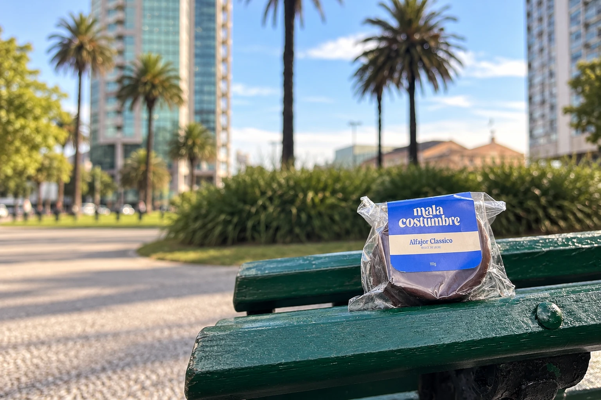

Classico negro
Chocolate negro y dulce de leche.
$130 UYU
Alfajores artesanales · Montevideo
Chocolate negro y dulce de leche.
$130 UYU
Chocolate blanco y dulce de leche.
$130 UYU
Cobertura blanca con maní.
$160 UYU
Un mordisco y me vas a querer para siempre.
Así los hacemos
Tapas de cacao. Dulce de leche. Y ese baño de chocolate que lo termina todo.
Alfajores artesanales, hechos en Montevideo. De esos que primero mirás por dentro y después querés probar.
Elegí el tuyoMala Costumbre · Montevideo, Uruguay
Una pausa, un paseo, algo rico para compartir. Siempre hay un momento para una mala costumbre.
Encontranos en Instagram